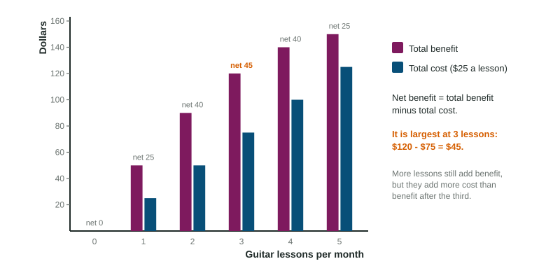

Cost-Benefit Analysis
A choice's total cost includes explicit costs, the money you pay, and implicit costs, the value of your own time and resources that you give up.
Part 1 · Hook
Why this matters
Part 2 · Before you start
What this builds on
Part 3 · Prerequisite check
Quick check before you start
1. The opportunity cost of a choice is
- the value of the next-best alternative given up
- the money you pay for it
- the sum of every alternative
- zero when nothing is paid
Show the answer
Only the next-best alternative counts.
- Correct: the value of the next-best alternative given up:
- the money you pay for it:
- the sum of every alternative:
- zero when nothing is paid:
2. A firm uses its own building instead of renting it out for $500 a month. Using it
- gives up $500 a month
- costs nothing, because the firm owns it
- costs the building's purchase price every month
- earns the firm $500
Show the answer
The rent it could have earned is the next-best use.
- Correct: gives up $500 a month:
- costs nothing, because the firm owns it:
- costs the building's purchase price every month:
- earns the firm $500:
Part 4 · See it
See it first

Part 5 · Step by step
How it works, step by step
- You list every cost of a choiceyou include explicit costs (money paid) and implicit costs (the value of what you give up)
- You add explicit and implicit costsyou get the full economic cost of the choice
- You subtract the economic cost from the total benefityou get the net benefit
- You compare the net benefit of each optionyou choose the option with the largest net benefit, not the largest total benefit
Part 6 · Key ideas
Key ideas
- Explicit costs are money payments. Implicit costs are the value of resources you already own or time you give up, with no money paid.
- Economic cost = explicit costs + implicit costs. Leaving out implicit costs makes a choice look better than it is.
- Total benefit is what a choice gives you: for a consumer, the satisfaction of using a good; for a firm, the money it takes in from sales (its revenue).
- Net benefit = total benefit - total cost. The best choice has the largest net benefit.
- Some choices are all or nothing (compare totals); others are about how much (the next topic looks at one more unit at a time).
Part 7 · Misconception
A common mistake
The wrong idea: The best number of guitar lessons is 5, because 5 lessons give the most total benefit.
What actually happens: The fifth lesson adds more cost than benefit. Net benefit, total benefit minus total cost, is largest at 3 lessons ($120 - $75 = $45).
Part 8 · Check yourself
Check yourself
Exam-style questions. Anything you miss goes into your review queue.
1. Which of these is an implicit cost of running a business?
- The rent paid for the shop
- Wages paid to employees
- The salary the owner gives up
- The bill for electricity
Show the answer
An implicit cost involves no payment: it is the value of something the owner gives up, such as a salary from another job.
- The rent paid for the shop: Rent paid is a money payment: explicit.
- Wages paid to employees: Wages paid are explicit.
- Correct: The salary the owner gives up: Right: no money changes hands, but something is given up.
- The bill for electricity: A bill paid is explicit.
Data
Rosa's summer lawn-care business
| Item | Amount ($) |
|---|---|
| Money from customers | 6,500 |
| Mower rental | 1,200 |
| Gas | 300 |
| Flyers | 100 |
| Pay she gives up at her garden-center job | 4,000 |
| Rent she gives up by using the family truck instead of renting it to a neighbor | 500 |
2. What are Rosa's explicit costs for the summer, in dollars?
Type a number ($). A four-function calculator is allowed, as on the exam.
Show the answer
Explicit costs are the money she pays: mower gas flyers dollars.
- Answer: 1600 $
3. What is Rosa's net benefit from running the business, counting every cost, in dollars?
Type a number ($). A four-function calculator is allowed, as on the exam.
Show the answer
Net benefit = total benefit - (explicit + implicit costs)
- Answer: 400 $
Data
Guitar lessons: total benefit and total cost
| Lessons per month | Total benefit ($) | Cost of lessons ($) |
|---|---|---|
| 0 | 0 | 0 |
| 1 | 50 | 25 |
| 2 | 90 | 50 |
| 3 | 120 | 75 |
| 4 | 140 | 100 |
| 5 | 150 | 125 |
4. How many lessons a month give Jamal the largest net benefit?
- 5
- 4
- 1
- 3
Show the answer
Net benefits are 0, 25, 40, 45, 40 and 25 dollars. The largest, $45, is at 3 lessons.
- 5: Five lessons give the most total benefit but a net benefit of only $25.
- 4: Four lessons give $40, less than $45.
- 1: One lesson gives $25.
- Correct: 3: Right: $120 - $75 = $45.
5. Two friends compare a business idea. One subtracts only the money they will spend; the other also subtracts the pay they give up. Who measures the choice correctly?
- The first friend, because money spent is what counts
- Both, because the two results come out the same
- The second friend, because implicit costs are real costs
- Neither, because benefits should not be compared with costs
Show the answer
The total cost of a choice includes what you give up. Leaving out implicit costs overstates the net benefit.
- The first friend, because money spent is what counts: Pay given up is a cost even though no money is spent.
- Both, because the two results come out the same: Adding implicit costs changes the result.
- Correct: The second friend, because implicit costs are real costs: Right: count explicit and implicit costs.
- Neither, because benefits should not be compared with costs: Comparing benefits with costs is exactly how choices are judged.
Part 9 · Summary
Summary
Part 10 · Up next
What comes next
Part 11 · Connections